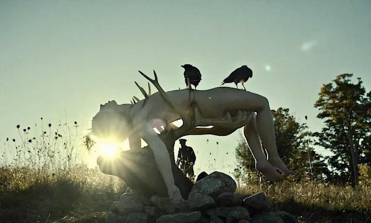

An early display of the Ripper's, rife with symbolism and attention to detail. The juxtaposition of the softness of the antler velvet with the hard sharpness of the antlers themselves, the innocence of the subject and the harsh positioning, the finality of the stone placement and the bleakness of the ravens who visited the piece all combine for a transcendental viewing experience.